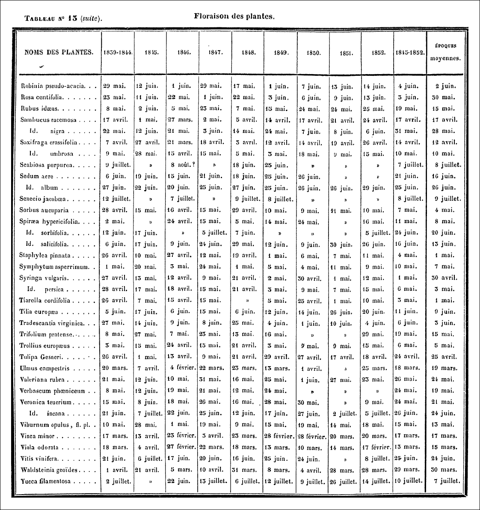
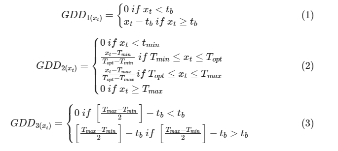

“Quetelet informó que una planta florece cuando se expone a una cantidad específica de calor, medida en grados Celsius al cuadrado (°C²). Por ejemplo, calculó que una lila florece cuando la suma de las temperaturas diarias al cuadrado supera los 4264°C² después de la última helada.”
“Quetelet razonó que la temperatura ejerce una “fuerza” sobre las plantas de la misma manera que la gravedad ejerce una fuerza sobre un objeto que cae.”

Datos Kyoto
Código
datos <-read_csv("datos/kyoto.csv") |>mutate(country ="Japan")datos |>head()
Extracción de datos climáticos
Los datos meteorológicos se obtuvieron con R del proyecto Prediction of Worldwide Energy Resources (POWER), utilizando el nasapower para extracción de series temporales (desde 1981-01-01 hasta 2024-02-25) con frecuencia diaria de las siguientes variables:
Temperatura promedio de la superficie terrestre (TS)
Temperatura máxima de la superficie terrestre (TS_MAX)
Temperatura mínima de la superficie terrestre (TS_MIN)
Evaporación de la superficie terrestre (EVLAND)
Días de heladas (FROST_DAYS)
Precipitación (PRECTOTCORR)
Perfil de humedad del suelo (GWETPROF)
Humedad relativa a dos metros (RH2M)
Humedad del suelo en la zona radicular (GWETROOT)
La cantidad total de ozono en una columna que se extiende verticalmente desde la superficie de la Tierra hasta la parte superior de la atmósfera (TO3)
data_modeling: para calcular los grados-día de crecimiento: (GDD) utilizo tres aproximaciones. Para simplificar el problema utilizo el 1 de enero de cada año como fecha de inicio para hacer los cálculos, sin embargo, la función featureEngGDD() recibe un argumento llamado start_date\((t_0)\) con el cual puedes elegir un fecha diferente. Elijo la temperatura basal o límite \((t_b)\) para considerar la absorción térmica como 5°C, sin embargo, la función en cuestión tiene un argumento llamado t_base que permite probar con diferentes valores. Para este cálculo se utilizan las temperaturas diarias \(x_t\) (variables TS, TS_MAX, TS_MIN). Las tres formas de calcular GDD se describen a continuación (Piña, R. A. et al., 2021; McCaster, G. S. & Wilhelm , W.W. , 1997 ):
Ecuación 1: enfoque clásico en el cálculo de GDD (Piña, R. A. et al., 2021). Si se supera una temperatura basal \(t_b = 5\) entonces se tendrá en cuenta la diferencia en grados Celsius para calcular el GDD acumulado (AGDD1).
Ecuación 2: La Ecuación 2 (Piña, R. A. et al., 2021) representa el modelo triangular de GDD , este modelo representa una función triangular no lineal basada en temperaturas. Esta ecuación tiene en cuenta la temperatura mínima, máxima y una temperatura óptima. Como no tengo suficiente información para considerar una temperatura óptima, utilizo la misma temperatura basal con un valor de 5°C.
Ecuación 3: esta ecuación es otra aproximación clásica (McCaster, G. S. & Wilhelm, W.W., 1997) para el cálculo de GDD, donde se utiliza la temperatura máxima y mínima. En este caso la ecuación 1 coincide con esta, sin embargo, para el primero uso la temperatura promedio directamente, en la ecuación 2 uso el promedio de las temperaturas máxima y mínima. Verifiqué que los resultados no son los mismos con los tres métodos.

Con las ecuaciones anteriores se obtienen los \(GDD_{(x_t)}\) para cada día que se encuentra entre la fecha inicial \(t_0\) y un día antes de la floración \(t_{\gamma-1}\), luego se suman para cada coordenada y se obtienen los grados día de crecimiento acumulados (AGDD1, AGDD2 y AGDD3).
---title: "La Ley de las plantas con flores"subtitle: ""author: "Edimer David Jaramillo"lang: es execute: eval: true echo: true warning: falseformat: html: page-layout: article fig-width: 6 fig-height: 4.5 toc: true toc-title: "Tabla de contenido" smooth-scroll: true code-fold: true df-print: paged toc-location: left number-depth: 4 theme: yeti code-copy: true highlight-style: github css: estilo.css code-tools: source: true---```{r setup, include=FALSE}knitr::opts_chunk$set(fig.align = "center", warning = FALSE, message = FALSE)```# Documento guía[A DEMONSTRATION OF THE LAW OF THE FLOWERING PLANTS](https://realworlddatascience.net/ideas/tutorials/posts/2023/04/13/flowers.html)# International Cherry Blossom Prediction Competition- [International Cherry Blossom Prediction Competition](https://competition.statistics.gmu.edu/)- [Repositorio Github - International Cherry Blossom Prediction Competition ](https://github.com/GMU-CherryBlossomCompetition/peak-bloom-prediction)# Bibliotecas de R```{r}library(tidyverse)library(nasapower)library(glue)library(arrow)library(splines)source("code-r/getWeatherPOWER.R")source("code-r/lagBloomDate.R")source("code-r/timeSerieDOY.R")colors_custom <-c("#014e25","#800080","#ffa500","#008080","#ff6347","#0000cd")theme_set(theme_bw())```# Adolphe Quetelet> "Quetelet informó que una planta florece cuando se expone a una cantidad específica de calor, medida en grados Celsius al cuadrado (°C²). Por ejemplo, calculó que una lila florece cuando la suma de las temperaturas diarias al cuadrado supera los 4264°C² después de la última helada."> "Quetelet razonó que la temperatura ejerce una “fuerza” sobre las plantas de la misma manera que la gravedad ejerce una fuerza sobre un objeto que cae." {fig-align="center"}{fig-align="center"}# Datos Kyoto```{r}datos <-read_csv("datos/kyoto.csv") |>mutate(country ="Japan")datos |>head()```# Extracción de datos climáticosLos datos meteorológicos se obtuvieron con R del proyecto [Prediction of Worldwide Energy Resources (POWER)](https://power.larc.nasa.gov/#resources), utilizando el [`nasapower`](https://docs .ropensci.org/nasapower/) para extracción de series temporales (desde 1981-01-01 hasta 2024-02-25) con frecuencia diaria de las siguientes variables:- Temperatura promedio de la superficie terrestre (TS)- Temperatura máxima de la superficie terrestre (TS_MAX)- Temperatura mínima de la superficie terrestre (TS_MIN)- Evaporación de la superficie terrestre (EVLAND)- Días de heladas (FROST_DAYS)- Precipitación (PRECTOTCORR)- Perfil de humedad del suelo (GWETPROF)- Humedad relativa a dos metros (RH2M)- Humedad del suelo en la zona radicular (GWETROOT)- La cantidad total de ozono en una columna que se extiende verticalmente desde la superficie de la Tierra hasta la parte superior de la atmósfera (TO3)- Para ver la descripción de cada parámetro, consulte [Recursos de NASA POWER](https://power.larc.nasa.gov/#resources)- Como el proyecto POWER está dirigido a tres [comunidades](https://power.larc.nasa.gov/docs/methodology/communities/), en este caso se utiliza la comunidad de Agroclimatología (**AG**).```{r}var_climate <-c("TS","TS_MAX","TS_MIN","EVLAND","FROST_DAYS","PRECTOTCORR","GWETPROF","RH2M","GWETROOT","TO3")start_date <-"1981-01-01"end_date <-"2024-02-25"frequency_climate <-"daily"# df_climate_kyoto <-# getWeatherPOWER(# var_climate = var_climate,# start_date = start_date,# end_date = end_date,# frequency_climate = frequency_climate,# long = datos$long,# lat = datos$lat# )# write_csv(df_climate_kyoto, "datos/weather_kyoto.csv")df_climate_kyoto <-read_csv("datos/weather_kyoto.csv")df_climate_kyoto |>head()```# Explorando los datos de floración## Distribución del DOY```{r}datos |>ggplot(aes(x = bloom_doy)) +geom_histogram(color ="black")```## Rezago de fecha de floración```{r}n_lag_operator <-1pais <-"Japan"res_kyoto <-lagBloomDate(data = datos |>filter(str_detect(location, "kyoto|Kyoto|KYOTO")),n_lag = n_lag_operator,country_sel = pais,pal_colors = colors_custom )res_kyoto$plot_diff +labs(subtitle =glue("Kyoto: 2 coordinates with p = {n_lag_operator}"))```## Serie temporal del DOY```{r}#| fig-width: 4.5#| fig-height: 3.5#| column: screen#| layout-nrow: 1timeSerieDOY(data = datos |>filter(str_detect(location, "kyoto|Kyoto|KYOTO")),country_sel = pais,pal_colors = colors_custom)$plot1 +labs(subtitle ="Kyoto")timeSerieDOY(data = datos |>filter(str_detect(location, "kyoto|Kyoto|KYOTO")),country_sel = pais,pal_colors = colors_custom)$plot2 +labs(subtitle ="Kyoto")timeSerieDOY(data = datos |>filter(str_detect(location, "kyoto|Kyoto|KYOTO")),country_sel = pais,pal_colors = colors_custom)$plot3 +labs(subtitle ="Kyoto")```# Floración + Clima- **`data_modeling`:** para calcular los *grados-día de crecimiento:* (GDD) utilizo tres aproximaciones. Para simplificar el problema utilizo el 1 de enero de cada año como fecha de inicio para hacer los cálculos, sin embargo, la función `featureEngGDD()` recibe un argumento llamado `start_date` $(t_0)$ con el cual puedes elegir un fecha diferente. Elijo la *temperatura basal* o límite $(t_b)$ para considerar la absorción térmica como 5°C, sin embargo, la función en cuestión tiene un argumento llamado `t_base` que permite probar con diferentes valores. Para este cálculo se utilizan las temperaturas diarias $x_t$ (variables `TS`, `TS_MAX`, `TS_MIN`). Las tres formas de calcular GDD se describen a continuación ([Piña, R. A. et al., 2021](https://www.mdpi.com/2223-7747/10/3/502); [McCaster, G. S. & Wilhelm , W.W. , 1997](https://www.sciencedirect.com/science/article/abs/pii/S0168192397000270#:~:text=The%20basic%20equation%20used%20is,BASE%20is%20the%20base%20temperature.) ): - **Ecuación 1:** enfoque clásico en el cálculo de GDD ([Piña, R. A. et al., 2021](https://www.mdpi.com/2223-7747/10/3/502)). Si se supera una temperatura basal $t_b = 5$ entonces se tendrá en cuenta la diferencia en grados Celsius para calcular el GDD acumulado (`AGDD1`). - **Ecuación 2:** La Ecuación 2 ([Piña, R. A. et al., 2021](https://www.mdpi.com/2223-7747/10/3/502)) representa el *modelo triangular de GDD *, este modelo representa una función triangular no lineal basada en temperaturas. Esta ecuación tiene en cuenta la temperatura mínima, máxima y una *temperatura óptima*. Como no tengo suficiente información para considerar una temperatura óptima, utilizo la misma temperatura basal con un valor de 5°C. - **Ecuación 3:** esta ecuación es otra aproximación clásica ([McCaster, G. S. & Wilhelm, W.W., 1997](https://www.sciencedirect.com/science/article/abs/pii/S0168192397000270#:~: text=La%20basic%20ecuación%20usada%20es,BASE%20es%20la%20base%20temperatura.)) para el cálculo de GDD, donde se utiliza la temperatura máxima y mínima. En este caso la *ecuación 1* coincide con esta, sin embargo, para el primero uso la temperatura promedio directamente, en la *ecuación 2* uso el promedio de las temperaturas máxima y mínima. Verifiqué que los resultados no son los mismos con los tres métodos.{fig-align="center"} Con las ecuaciones anteriores se obtienen los $GDD_{(x_t)}$ para cada día que se encuentra entre la fecha inicial $t_0$ y un día antes de la floración $t_{\gamma-1}$, luego se suman para cada coordenada y se obtienen los grados día de crecimiento acumulados (`AGDD1`, `AGDD2` y `AGDD3`).$$AGDD_i = \sum_{t_0}^{t_{\gamma-1}} GDD_i$$```{r}data_modeling <-read_parquet("datos/data_modeling.parquet") |>select(location, country, lat, long, year_bloom, bloom_doy, agdd1, agdd2, agdd3)data_modeling |>head()```# GDD vs DOY```{r}#| fig-width: 5.5#| fig-height: 3.2#| layout-nrow: 3#| column: screennames_location <-unique(data_modeling$location)names_country <-unique(data_modeling$country)# Plots AGDD1 ----data_modeling |>filter(country == names_country[1]) |>filter(agdd1 >5) |>filter(bloom_doy >80) |>ggplot(aes(x = agdd1, y = bloom_doy)) +geom_point(color = colors_custom[1],alpha =0.35,size =0.85) +geom_smooth(method ="gam",formula = y ~ns(x, df =3),color = colors_custom[2],size =0.5 ) +scale_x_log10() +scale_y_log10() +labs(title = names_country[1],x ="AGDD1",y ="DOY")data_modeling |>filter(country == names_country[2]) |>filter(agdd1 >5) |>ggplot(aes(x = agdd1, y = bloom_doy)) +geom_point(color = colors_custom[1],alpha =0.35,size =0.85) +geom_smooth(method ="gam",formula = y ~ns(x, df =3),color = colors_custom[2],size =0.5 ) +scale_x_log10() +scale_y_log10() +labs(title = names_country[2],x ="AGDD1",y ="DOY")data_modeling |>filter(country == names_country[3]) |>filter(agdd1 >5) |>ggplot(aes(x = agdd1, y = bloom_doy)) +geom_point(color = colors_custom[1],alpha =0.35,size =0.85) +geom_smooth(method ="gam",formula = y ~ns(x, df =3),color = colors_custom[2],size =0.5 ) +scale_x_log10() +scale_y_log10() +labs(title = names_country[3],x ="AGDD1",y ="DOY")data_modeling |>filter(country == names_country[5]) |>filter(agdd1 >5) |>ggplot(aes(x = agdd1, y = bloom_doy)) +geom_point(color = colors_custom[1],alpha =0.75,size =0.85) +geom_smooth(method ="gam",formula = y ~ns(x, df =3),color = colors_custom[2],size =0.5 ) +scale_x_log10() +scale_y_log10() +labs(title = names_country[5],x ="AGDD1",y ="DOY")data_modeling |>filter(country == names_country[6]) |>filter(agdd1 >5) |>ggplot(aes(x = agdd1, y = bloom_doy)) +geom_point(color = colors_custom[1],alpha =0.55,size =0.85) +geom_smooth(method ="gam",formula = y ~ns(x, df =3),color = colors_custom[2],size =0.5 ) +scale_x_log10() +scale_y_log10() +labs(title = names_country[6],x ="AGDD1",y ="DOY")# Plots AGDD2 ----data_modeling |>filter(country == names_country[1]) |>filter(agdd2 >5) |>filter(bloom_doy >80) |>ggplot(aes(x = agdd2, y = bloom_doy)) +geom_point(color = colors_custom[1],alpha =0.35,size =0.85) +geom_smooth(method ="gam",formula = y ~ns(x, df =3),color = colors_custom[2],size =0.5 ) +scale_x_log10() +scale_y_log10() +labs(title = names_country[1],x ="agdd2",y ="DOY")data_modeling |>filter(country == names_country[2]) |>filter(agdd2 >5) |>ggplot(aes(x = agdd2, y = bloom_doy)) +geom_point(color = colors_custom[1],alpha =0.35,size =0.85) +geom_smooth(method ="gam",formula = y ~ns(x, df =3),color = colors_custom[2],size =0.5 ) +scale_x_log10() +scale_y_log10() +labs(title = names_country[2],x ="agdd2",y ="DOY")data_modeling |>filter(country == names_country[3]) |>filter(agdd2 >5) |>ggplot(aes(x = agdd2, y = bloom_doy)) +geom_point(color = colors_custom[1],alpha =0.35,size =0.85) +geom_smooth(method ="gam",formula = y ~ns(x, df =3),color = colors_custom[2],size =0.5 ) +scale_x_log10() +scale_y_log10() +labs(title = names_country[3],x ="agdd2",y ="DOY")data_modeling |>filter(country == names_country[5]) |>filter(agdd2 >5) |>ggplot(aes(x = agdd2, y = bloom_doy)) +geom_point(color = colors_custom[1],alpha =0.75,size =0.85) +geom_smooth(method ="gam",formula = y ~ns(x, df =3),color = colors_custom[2],size =0.5 ) +scale_x_log10() +scale_y_log10() +labs(title = names_country[5],x ="agdd2",y ="DOY")data_modeling |>filter(country == names_country[6]) |>filter(agdd2 >5) |>ggplot(aes(x = agdd2, y = bloom_doy)) +geom_point(color = colors_custom[1],alpha =0.55,size =0.85) +geom_smooth(method ="gam",formula = y ~ns(x, df =3),color = colors_custom[2],size =0.5 ) +scale_x_log10() +scale_y_log10() +labs(title = names_country[6],x ="agdd2",y ="DOY")# Plots AGDD3 ----data_modeling |>filter(country == names_country[1]) |>filter(agdd3 >5) |>filter(bloom_doy >80) |>ggplot(aes(x = agdd3, y = bloom_doy)) +geom_point(color = colors_custom[1],alpha =0.35,size =0.85) +geom_smooth(method ="gam",formula = y ~ns(x, df =3),color = colors_custom[2],size =0.5 ) +scale_x_log10() +scale_y_log10() +labs(title = names_country[1],x ="agdd3",y ="DOY")data_modeling |>filter(country == names_country[2]) |>filter(agdd3 >5) |>ggplot(aes(x = agdd3, y = bloom_doy)) +geom_point(color = colors_custom[1],alpha =0.35,size =0.85) +geom_smooth(method ="gam",formula = y ~ns(x, df =3),color = colors_custom[2],size =0.5 ) +scale_x_log10() +scale_y_log10() +labs(title = names_country[2],x ="agdd3",y ="DOY")data_modeling |>filter(country == names_country[3]) |>filter(agdd3 >5) |>ggplot(aes(x = agdd3, y = bloom_doy)) +geom_point(color = colors_custom[1],alpha =0.35,size =0.85) +geom_smooth(method ="gam",formula = y ~ns(x, df =3),color = colors_custom[2],size =0.5 ) +scale_x_log10() +scale_y_log10() +labs(title = names_country[3],x ="agdd3",y ="DOY")data_modeling |>filter(country == names_country[5]) |>filter(agdd3 >5) |>ggplot(aes(x = agdd3, y = bloom_doy)) +geom_point(color = colors_custom[1],alpha =0.75,size =0.85) +geom_smooth(method ="gam",formula = y ~ns(x, df =3),color = colors_custom[2],size =0.5 ) +scale_x_log10() +scale_y_log10() +labs(title = names_country[5],x ="agdd3",y ="DOY")data_modeling |>filter(country == names_country[6]) |>filter(agdd3 >5) |>ggplot(aes(x = agdd3, y = bloom_doy)) +geom_point(color = colors_custom[1],alpha =0.55,size =0.85) +geom_smooth(method ="gam",formula = y ~ns(x, df =3),color = colors_custom[2],size =0.5 ) +scale_x_log10() +scale_y_log10() +labs(title = names_country[6],x ="agdd3",y ="DOY")```